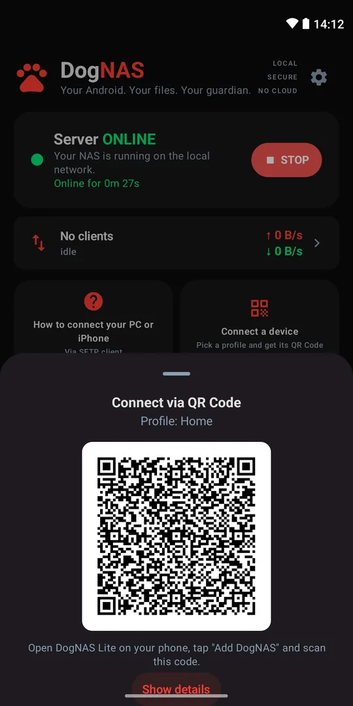
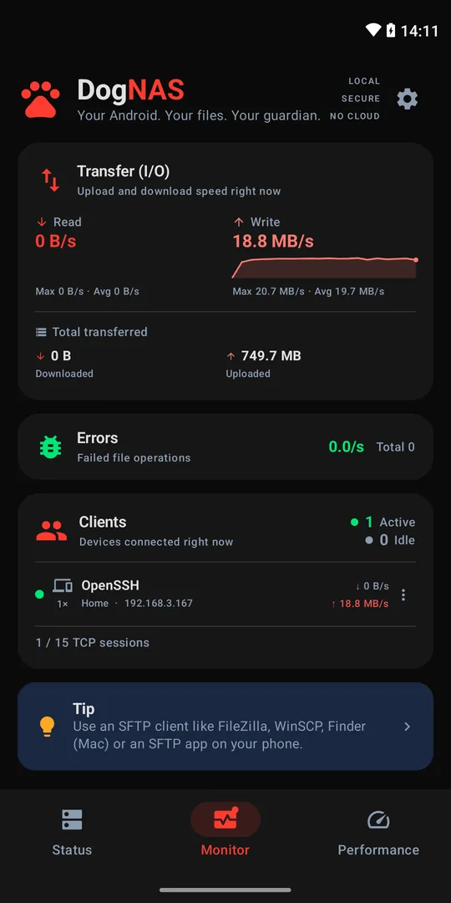

Your files at home.
DogNAS turns an Android you already own into a private file server on your Wi-Fi. No cloud, no monthly fee.


Who is DogNAS for?
For your home
Your old Android becomes the family’s storage, over Wi-Fi. No hassle.
See how it works →For tech people
An always-on SFTP server: a NAS for home or office, smart home and IoT.
See the tech details →Benefits
The problems DogNAS solves
At home, in your home office or in your smart home, DogNAS ends everyday headaches with an Android you already own.
Home use
- Your phone is always full, with no room for photos and videos.Send photos and videos to DogNAS over Wi-Fi and free up space without deleting anything.
- A cloud subscription that keeps going up.Use the Android sitting in a drawer: Free keeps up to 64 GB and Pro is a one-time purchase, no subscription.
- Family photos scattered around and kept on someone else’s servers.Everything in one place, inside your home: a profile and a PIN for each person, no cloud and no account.
Home office
- Work files stuck on USB sticks and in emails to yourself.Open them from your PC, Mac, tablet or phone over the network: FileZilla, WinSCP, Cyberduck or DogNAS Client Lite.
- A traditional NAS is expensive and hard to set up.Install an app, tap Start and pair with a QR Code and a PIN. No router settings.
- Client documents on a public cloud.They stay on your network, encrypted in transit (SSH/SFTP), with one credential per device that you can revoke at any time.
Smart home
- Camera recordings locked into the maker’s paid cloud.Cameras and NVRs that upload over SFTP record straight to DogNAS, on your network.
- Automations with nowhere to keep files.Home Assistant, Node-RED, rclone and scripts send and fetch files over SFTP.
- A server that stops when the power goes out.The phone’s battery rides out short outages and, on Pro, DogNAS starts again by itself after a reboot.
For your home
Your old Android as home storage, over Wi-Fi
That phone sitting in a drawer starts keeping everyone’s photos, videos and documents. You reach them from your phone, in any room, with no cables and no cloud bill.
Free up space on your phone!
Use DogNAS Client Lite to send photos and videos from your phone to DogNAS, which keeps them in your profile. Then delete them from your phone without fear of losing them.
A space for each person
Each profile has its own PIN and folders. Nobody sees anyone else’s files.
Easy to connect
Use DogNAS Client Lite to connect to your DogNAS server: point the camera at the QR Code, type the PIN, done.
No cloud, no monthly fee
Your files stay only on your DogNAS Android, reachable over your home Wi-Fi. No account, no ads, no monthly charge. Use all of the device’s space: 32, 64, 128, 256 GB and beyond (over 64 GB with DogNAS Pro).
How it works
Start the server
Install DogNAS on the Android that will keep your files — on the device, an SD card or a USB drive — and tap Start.
Connect your phone
Generate a profile's QR Code and scan it with DogNAS Client Lite. Each profile has its own PIN and space.

Use your files
Browse, upload and download over your home Wi-Fi. PCs and Macs connect via SFTP.
For tech, smart home and office
An always-on SFTP server on Android
A lightweight NAS for home or office: any device, script or automation that speaks SFTP can send and fetch files over Wi-Fi.

NAS for home or office
Per-profile folders, reached from PC, Mac and Linux with FileZilla, WinSCP, Cyberduck, rclone or OpenSSH’s sftp.
Smart home and IoT
Receive files from cameras and NVRs that upload over SFTP, backups from other servers, and automation scripts (Home Assistant, Node-RED, cron).
Secure by default
SSH-2 with AES-GCM or ChaCha20, the server key pinned at pairing, and one credential per device, revocable at any time.
Built to stay on
Stores to internal memory, an SD card or a USB drive. With Pro it comes back by itself after a reboot.
Productivity at the office
Ideal for anyone who works with photos, videos and documents and needs to keep it all organized: your files stay reachable from PC, tablet and smartphone, with no USB sticks or cables. DogNAS makes it easy, over your Wi-Fi.
Specifications
| Protocol | SFTP over SSH-2 |
|---|---|
| Authentication | Username and password — one credential per device, revocable |
| Storage | Internal memory, SD card, USB drive |
| Clients | DogNAS Client Lite, FileZilla, WinSCP, Cyberduck, rclone, OpenSSH and scripts |
| Requirements | Android 7.0 or newer, on the same network |
For everyone
Build a robust DogNAS
Want as much storage as possible? Combine DogNAS with other devices: plug in an external SSD, or even the hard drive you took out of your old laptop. It all works together, easily and securely, on your Wi-Fi.

External SSD
Plug in a USB SSD for room and speed to keep everything at home.
Your old laptop’s hard drive
Put the drive you swapped out of your laptop in a USB enclosure and give it a new life as home storage.
SD card or USB stick
The simplest way to add space to the phone that became a server.
Several DogNAS at home
More than one Android in a drawer? Each can be a DogNAS; DogNAS Client Lite shows them all in “My storages”.
USB drives need a phone with USB OTG. Spinning hard drives may need more power than the phone provides — use a powered USB hub in that case. On the Free plan DogNAS manages up to 64 GB; with Pro, the whole drive.
Follow everything


Free to start
| Free | Pro | |
|---|---|---|
| Storage | 64 GB | All of it |
| Profiles | Home + 2 | Unlimited |
| Paired devices | 3 | Unlimited |
| Performance | Good | Maximum, optimized |
| With the app closed | Pause | Keep going |
| After a reboot | Tap to start | Starts by itself |
DogNAS Pro: one-time purchase, no subscription. DogNAS Client Lite is always free.